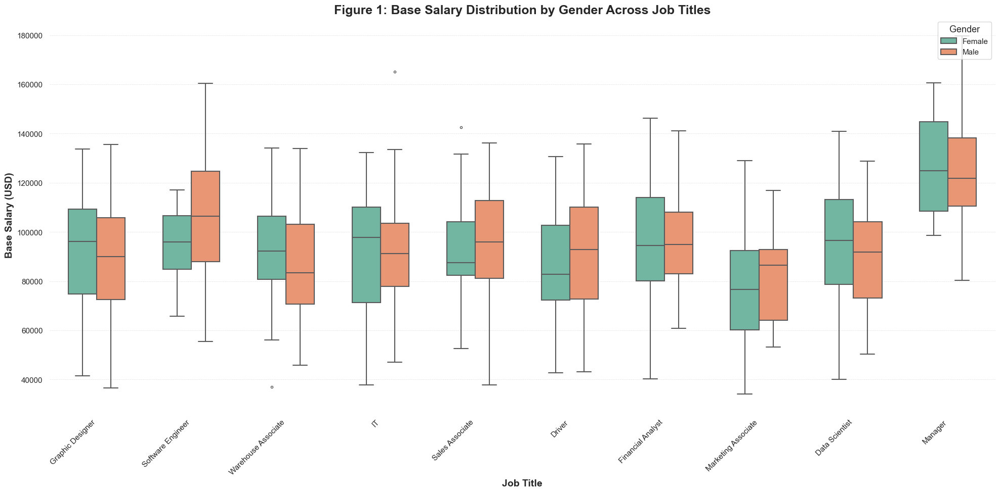
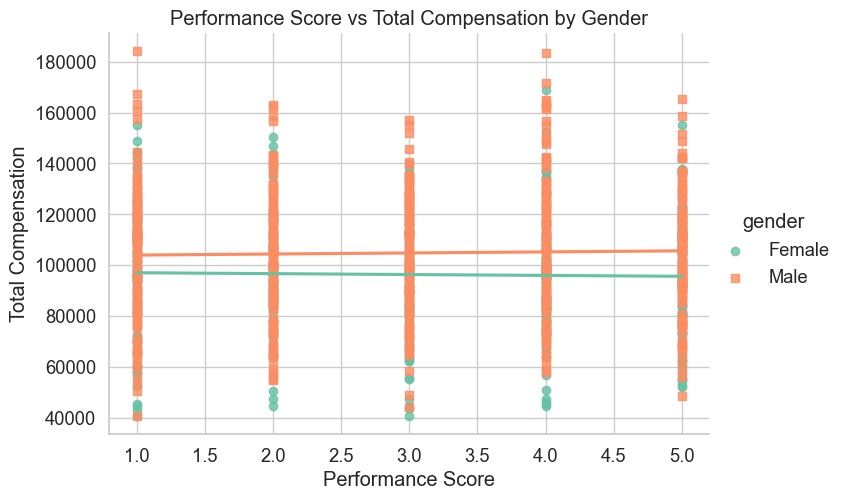
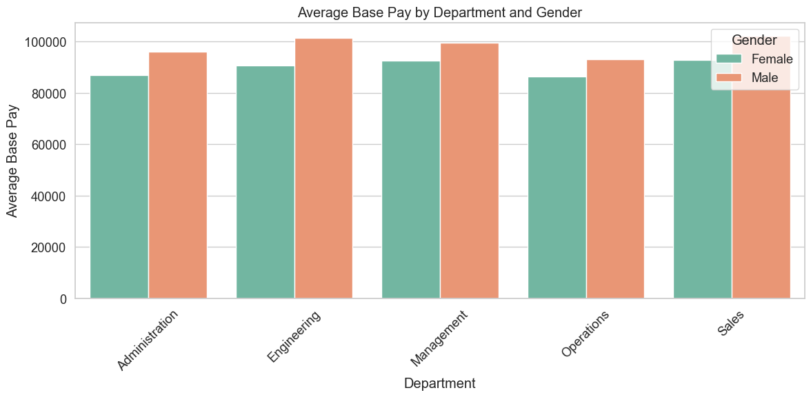
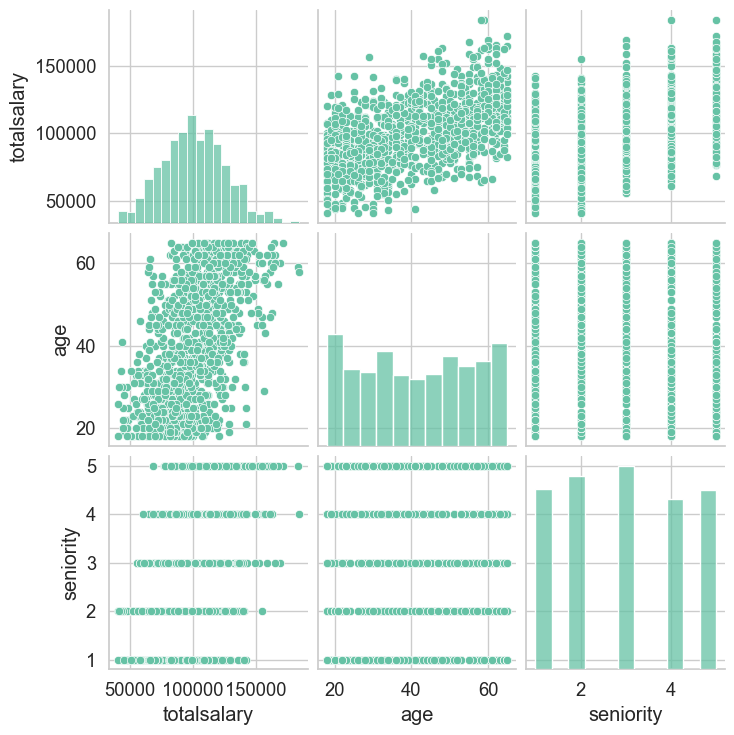
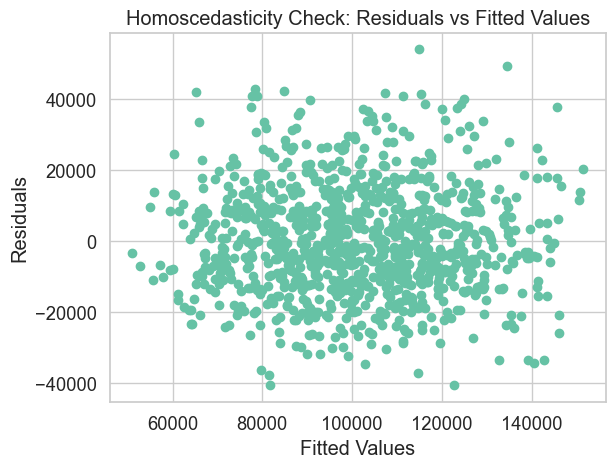
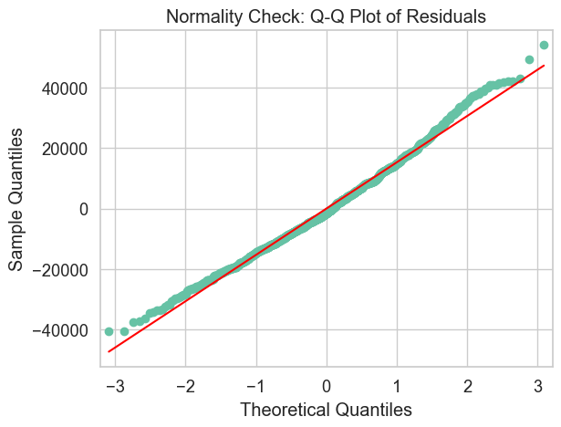
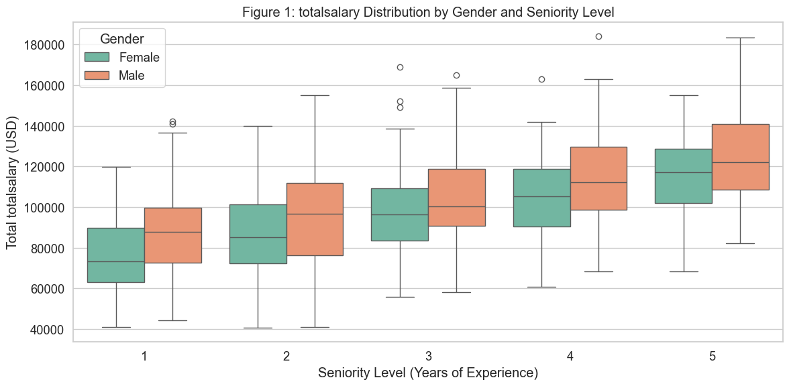
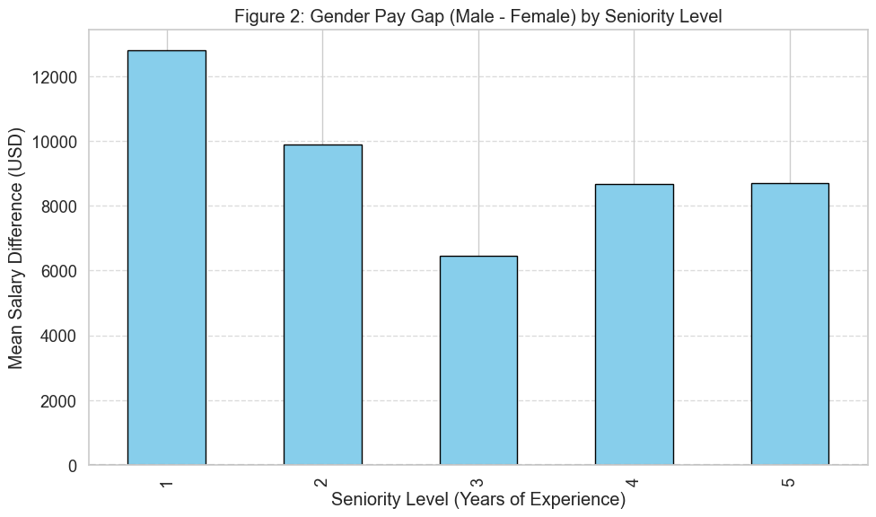

import pandas as pd
import numpy as np
import matplotlib.pyplot as plt
import seaborn as sns
from scipy import stats
from scipy.stats import levene
import statsmodels.api as sm
import statsmodels.formula.api as smf
from statsmodels.formula.api import ols
from statsmodels.stats.anova import anova_lm
from statsmodels.stats.multicomp import pairwise_tukeyhsd
from statsmodels.stats.diagnostic import normal_ad
from statsmodels.graphics.gofplots import qqplot
from scipy.stats import ttest_ind, shapiro, leveneResearch Question 1
df = pd.read_csv("Gender-Pay-Gap.csv")
df| JobTitle | Gender | Age | PerfEval | Education | Dept | Seniority | BasePay | Bonus | |
|---|---|---|---|---|---|---|---|---|---|
| 0 | Graphic Designer | Female | 18 | 5 | College | Operations | 2 | 42363 | 9938 |
| 1 | Software Engineer | Male | 21 | 5 | College | Management | 5 | 108476 | 11128 |
| 2 | Warehouse Associate | Female | 19 | 4 | PhD | Administration | 5 | 90208 | 9268 |
| 3 | Software Engineer | Male | 20 | 5 | Masters | Sales | 4 | 108080 | 10154 |
| 4 | Graphic Designer | Male | 26 | 5 | Masters | Engineering | 5 | 99464 | 9319 |
| ... | ... | ... | ... | ... | ... | ... | ... | ... | ... |
| 995 | Marketing Associate | Female | 61 | 1 | High School | Administration | 1 | 62644 | 3270 |
| 996 | Data Scientist | Male | 57 | 1 | Masters | Sales | 2 | 108977 | 3567 |
| 997 | Financial Analyst | Male | 48 | 1 | High School | Operations | 1 | 92347 | 2724 |
| 998 | Financial Analyst | Male | 65 | 2 | High School | Administration | 1 | 97376 | 2225 |
| 999 | Financial Analyst | Male | 60 | 1 | PhD | Sales | 2 | 123108 | 2244 |
1000 rows × 9 columns
# Check for missing values and drop rows with missing values (if any)
df = df.dropna()
# Remove duplicate rows
df = df.drop_duplicates()
# Ensure data types are correct (convert columns if necessary)
# For example, if 'Age' should be an integer, ensure it's correctly typed
df['Age'] = df['Age'].astype(int)
# Handle outliers (example: remove rows with BasePay or Bonus beyond a reasonable range)
df = df[(df['BasePay'] > 0) & (df['Bonus'] > 0)]
# Create Total Salary column by summing BasePay and Bonus
df['TotalSalary'] = df['BasePay'] + df['Bonus']
df['Dept'] = df['Dept'].astype('category')
# Standardize column names (optional, e.g., make all lowercase)
df.columns = df.columns.str.lower()
# Display the cleaned dataset
df| jobtitle | gender | age | perfeval | education | dept | seniority | basepay | bonus | totalsalary | |
|---|---|---|---|---|---|---|---|---|---|---|
| 0 | Graphic Designer | Female | 18 | 5 | College | Operations | 2 | 42363 | 9938 | 52301 |
| 1 | Software Engineer | Male | 21 | 5 | College | Management | 5 | 108476 | 11128 | 119604 |
| 2 | Warehouse Associate | Female | 19 | 4 | PhD | Administration | 5 | 90208 | 9268 | 99476 |
| 3 | Software Engineer | Male | 20 | 5 | Masters | Sales | 4 | 108080 | 10154 | 118234 |
| 4 | Graphic Designer | Male | 26 | 5 | Masters | Engineering | 5 | 99464 | 9319 | 108783 |
| ... | ... | ... | ... | ... | ... | ... | ... | ... | ... | ... |
| 995 | Marketing Associate | Female | 61 | 1 | High School | Administration | 1 | 62644 | 3270 | 65914 |
| 996 | Data Scientist | Male | 57 | 1 | Masters | Sales | 2 | 108977 | 3567 | 112544 |
| 997 | Financial Analyst | Male | 48 | 1 | High School | Operations | 1 | 92347 | 2724 | 95071 |
| 998 | Financial Analyst | Male | 65 | 2 | High School | Administration | 1 | 97376 | 2225 | 99601 |
| 999 | Financial Analyst | Male | 60 | 1 | PhD | Sales | 2 | 123108 | 2244 | 125352 |
1000 rows × 10 columns
Is there a statistically significant difference in average salaries between male and female employees for the same job position?
# Filter job titles with both male and female employees
role_gender_counts = df.groupby(["jobtitle", "gender"]).size().unstack()
valid_roles = role_gender_counts.dropna().index.tolist()
filtered_df = df[df["jobtitle"].isin(valid_roles)]# Analysis Loop
results = []
for role in valid_roles:
sub_df = df[df["jobtitle"] == role]
males = sub_df[sub_df["gender"] == "Male"]["basepay"]
females = sub_df[sub_df["gender"] == "Female"]["basepay"]
if len(males) > 1 and len(females) > 1:
# Normality Test (Shapiro-Wilk)
male_normal = shapiro(males)[1] > 0.05
female_normal = shapiro(females)[1] > 0.05
# Variance Equality (Levene’s Test)
equal_var = levene(males, females)[1] > 0.05
# Use Welch's t-test (default safe option)
t_stat, p_val = ttest_ind(males, females, equal_var=False)
pooled_std = np.sqrt((males.std()**2 + females.std()**2) / 2)
cohen_d = (males.mean() - females.mean()) / pooled_std
results.append({
"JobTitle": role,
"Male_Mean": round(males.mean(), 2),
"Female_Mean": round(females.mean(), 2),
"P-Value": round(p_val, 4),
"Cohen_d": round(cohen_d, 3),
"Male_Normal": male_normal,
"Female_Normal": female_normal,
"Equal_Variance": equal_var,
"Test_Type": "Welch t-test"
})
# Convert to DataFrame
results_df = pd.DataFrame(results).sort_values("P-Value")
print("Gender Pay Analysis by Job Title:\n")
print(results_df)
Gender Pay Analysis by Job Title:
JobTitle Male_Mean Female_Mean P-Value Cohen_d Male_Normal \
8 Software Engineer 106371.49 94701.00 0.1156 0.540 True
0 Data Scientist 89222.63 95704.79 0.1405 -0.287 True
9 Warehouse Associate 86553.43 92428.26 0.1856 -0.282 True
1 Driver 91952.67 86867.63 0.2636 0.236 True
6 Marketing Associate 81881.82 76119.18 0.4102 0.269 True
7 Sales Associate 94663.12 91894.21 0.5539 0.122 True
3 Graphic Designer 89595.80 92243.29 0.5703 -0.115 True
5 Manager 124848.93 127252.28 0.6554 -0.116 True
2 Financial Analyst 94607.03 95458.33 0.8401 -0.040 True
4 IT 91021.98 90475.72 0.9134 0.022 True
Female_Normal Equal_Variance Test_Type
8 True True Welch t-test
0 True True Welch t-test
9 True True Welch t-test
1 True True Welch t-test
6 True True Welch t-test
7 True True Welch t-test
3 True True Welch t-test
5 True True Welch t-test
2 True True Welch t-test
4 True True Welch t-test
# Libraries already imported previously
sns.set(style="whitegrid", palette="Set2", font_scale=1.2)
plt.figure(figsize=(20, 10))
box = sns.boxplot(
data=filtered_df,
x="jobtitle",
y="basepay",
hue="gender",
width=0.6,
fliersize=3,
linewidth=1.5
)
# Formatting
plt.title("Figure 1: Base Salary Distribution by Gender Across Job Titles", fontsize=18, fontweight='bold')
plt.xlabel("Job Title", fontsize=14, fontweight='bold')
plt.ylabel("Base Salary (USD)", fontsize=14, fontweight='bold')
plt.xticks(rotation=45, ha='right', fontsize=11)
plt.yticks(fontsize=11)
plt.legend(title="Gender", title_fontsize=13, fontsize=11, loc='upper right')
plt.tight_layout()
plt.grid(True, which='major', axis='y', linestyle='--', linewidth=0.5, alpha=0.6)
plt.box(False)
# Show the plot
plt.show()
Research Question 2
How do performance evaluation scores relate to overall compensation (base pay and bonus) for male versus female employees
# Create a new column for total compensation (base pay + bonus)
df['total_compensation'] = df['basepay'] + df['bonus']
# Encode gender as a binary variable (e.g., 0 for male, 1 for female)
df['gender_encoded'] = df['gender'].map({'Male': 0, 'Female': 1})
# Fit a multiple linear regression model
# Include performance evaluation scores, gender, and an interaction term between gender and performance scores
formula = 'total_compensation ~ perfeval + gender_encoded + perfeval:gender_encoded'
model = smf.ols(formula=formula, data=df).fit()
# Display the summary of the regression model
print(model.summary()) OLS Regression Results
==============================================================================
Dep. Variable: total_compensation R-squared: 0.029
Model: OLS Adj. R-squared: 0.026
Method: Least Squares F-statistic: 9.893
Date: Sat, 26 Apr 2025 Prob (F-statistic): 1.97e-06
Time: 14:30:22 Log-Likelihood: -11537.
No. Observations: 1000 AIC: 2.308e+04
Df Residuals: 996 BIC: 2.310e+04
Df Model: 3
Covariance Type: nonrobust
===========================================================================================
coef std err t P>|t| [0.025 0.975]
-------------------------------------------------------------------------------------------
Intercept 1.036e+05 2619.022 39.565 0.000 9.85e+04 1.09e+05
perfeval 414.8943 763.803 0.543 0.587 -1083.953 1913.742
gender_encoded -6183.2655 3702.739 -1.670 0.095 -1.34e+04 1082.800
perfeval:gender_encoded -762.8790 1106.986 -0.689 0.491 -2935.172 1409.414
==============================================================================
Omnibus: 5.495 Durbin-Watson: 1.927
Prob(Omnibus): 0.064 Jarque-Bera (JB): 5.374
Skew: 0.150 Prob(JB): 0.0681
Kurtosis: 2.801 Cond. No. 21.7
==============================================================================
Notes:
[1] Standard Errors assume that the covariance matrix of the errors is correctly specified.# Create a scatter plot with regression lines for each gender
sns.lmplot(
x='perfeval',
y='total_compensation',
hue='gender',
data=df,
aspect=1.5,
markers=['o', 's'],
ci=None
)
# Add labels and title
plt.xlabel('Performance Score')
plt.ylabel('Total Compensation')
plt.title('Performance Score vs Total Compensation by Gender')
plt.show()
RESEARCH QUESTION 3
How does the average base pay differ between male and female employees in various departments?
# Display basic group means
avg_base_pay = df.groupby(['dept', 'gender'])['basepay'].mean().unstack()
print("\nAverage Base Pay by Department and Gender:")
print(avg_base_pay)
# Perform Two-Way ANOVA
# Make sure Dept and Gender are categorical variables
df['dept'] = df['dept'].astype('category')
df['gender'] = df['gender'].astype('category')
# Build and fit the model
model = ols('basepay ~ C(dept) + C(gender) + C(dept):C(gender)', data=df).fit()
anova_table = sm.stats.anova_lm(model, typ=2)
# Show ANOVA results
print("\nTwo-Way ANOVA Results:")
print(anova_table)
# Visualization: Average BasePay by Department and Gender
plt.figure(figsize=(12, 6))
sns.barplot(data=df, x='dept', y='basepay', hue='gender', ci=None)
plt.title('Average Base Pay by Department and Gender')
plt.xlabel('Department')
plt.ylabel('Average Base Pay')
plt.xticks(rotation=45)
plt.legend(title='Gender')
plt.tight_layout()
plt.show()
C:\Users\gauri\AppData\Local\Temp\ipykernel_55864\3601441753.py:2: FutureWarning: The default of observed=False is deprecated and will be changed to True in a future version of pandas. Pass observed=False to retain current behavior or observed=True to adopt the future default and silence this warning.
avg_base_pay = df.groupby(['dept', 'gender'])['basepay'].mean().unstack()
C:\Users\gauri\AppData\Local\Temp\ipykernel_55864\3601441753.py:21: FutureWarning:
The `ci` parameter is deprecated. Use `errorbar=None` for the same effect.
sns.barplot(data=df, x='dept', y='basepay', hue='gender', ci=None)
Average Base Pay by Department and Gender:
gender Female Male
dept
Administration 87071.873684 96170.744898
Engineering 90774.955056 101433.000000
Management 92679.011494 99482.297297
Operations 86456.156250 93118.438596
Sales 92867.079208 102349.481132
Two-Way ANOVA Results:
sum_sq df F PR(>F)
C(dept) 9.317056e+09 4.0 3.759494 4.827383e-03
C(gender) 1.803225e+10 1.0 29.104529 8.580222e-08
C(dept):C(gender) 6.059093e+08 4.0 0.244488 9.130447e-01
Residual 6.133727e+11 990.0 NaN NaN
RESEARCH QUESTION 4
Does the gender pay gap persist after controlling for experience, education, and job level?
# ------------------ Multiple Linear Regression ------------------
# Fit the MLR model
# We'll use gender, job level (seniority), age, and department to predict salary
model = ols('total_compensation ~ C(gender) + C(seniority) + age + C(dept)', data=df).fit()# Display summary of the regression model
print(model.summary()) OLS Regression Results
==============================================================================
Dep. Variable: total_compensation R-squared: 0.630
Model: OLS Adj. R-squared: 0.626
Method: Least Squares F-statistic: 168.1
Date: Sat, 26 Apr 2025 Prob (F-statistic): 1.93e-205
Time: 14:30:23 Log-Likelihood: -11055.
No. Observations: 1000 AIC: 2.213e+04
Df Residuals: 989 BIC: 2.219e+04
Df Model: 10
Covariance Type: nonrobust
==========================================================================================
coef std err t P>|t| [0.025 0.975]
------------------------------------------------------------------------------------------
Intercept 3.361e+04 2121.634 15.843 0.000 2.94e+04 3.78e+04
C(gender)[T.Male] 9957.7806 978.093 10.181 0.000 8038.406 1.19e+04
C(seniority)[T.2] 8299.2707 1533.529 5.412 0.000 5289.925 1.13e+04
C(seniority)[T.3] 1.775e+04 1518.570 11.688 0.000 1.48e+04 2.07e+04
C(seniority)[T.4] 2.94e+04 1584.764 18.551 0.000 2.63e+04 3.25e+04
C(seniority)[T.5] 3.879e+04 1569.324 24.720 0.000 3.57e+04 4.19e+04
C(dept)[T.Engineering] 4826.2529 1569.346 3.075 0.002 1746.622 7905.884
C(dept)[T.Management] 5498.5192 1562.219 3.520 0.000 2432.874 8564.164
C(dept)[T.Operations] 734.7342 1543.972 0.476 0.634 -2295.103 3764.572
C(dept)[T.Sales] 6218.0188 1545.050 4.024 0.000 3186.066 9249.972
age 967.6705 34.155 28.332 0.000 900.646 1034.695
==============================================================================
Omnibus: 21.053 Durbin-Watson: 1.958
Prob(Omnibus): 0.000 Jarque-Bera (JB): 21.845
Skew: 0.358 Prob(JB): 1.81e-05
Kurtosis: 3.109 Cond. No. 268.
==============================================================================
Notes:
[1] Standard Errors assume that the covariance matrix of the errors is correctly specified.# ------------------ Assumption Checks ------------------
# 1. Linearity: Check via scatterplot of each independent variable vs TotalSalary
sns.pairplot(df[['totalsalary', 'age', 'seniority', 'gender']])
plt.show()
# 2. Homoscedasticity: Plot residuals vs fitted values
fitted_vals = model.fittedvalues
residuals = model.resid
plt.scatter(fitted_vals, residuals)
plt.xlabel('Fitted Values')
plt.ylabel('Residuals')
plt.title('Homoscedasticity Check: Residuals vs Fitted Values')
plt.show()
# 3. Normality of residuals: Use Q-Q plot
qqplot(residuals, line='s')
plt.title('Normality Check: Q-Q Plot of Residuals')
plt.show()
# Perform the normality test (Anderson-Darling test for residuals)
ad_statistic, ad_significance_level = normal_ad(residuals)
print(f"Normality Test (Anderson-Darling) Statistic: {ad_statistic}, Significance Level: {ad_significance_level}")Normality Test (Anderson-Darling) Statistic: 2.1720007491018123, Significance Level: 1.6245396971697394e-05
# ------------------ Post-Hoc Test (if Gender is significant) ------------------
# If gender is significant, we can explore its interaction with job level or age
# For simplicity, assume gender is significant, and we can run interaction terms
interaction_model = ols('totalsalary ~ C(gender) * C(seniority) + age + C(dept)', data=df).fit()# ANOVA table for the interaction model
anova_results = anova_lm(interaction_model, typ=2)
print("\nANOVA Results for Interaction Model:")
print(anova_results)
ANOVA Results for Interaction Model:
sum_sq df F PR(>F)
C(gender) 2.453898e+10 1.0 103.620103 3.292170e-23
C(seniority) 1.878164e+11 4.0 198.271855 1.021372e-124
C(dept) 6.426574e+09 4.0 6.784331 2.184519e-05
C(gender):C(seniority) 8.819225e+08 4.0 0.931018 4.451051e-01
age 1.900921e+11 1.0 802.697040 1.233196e-129
Residual 2.332645e+11 985.0 NaN NaNResearch Question 5
How does the gender pay gap evolve with seniority levels in the workplace?
# Convert gender and seniority to categorical
df['gender'] = df['gender'].astype('category')
df['seniority'] = df['seniority'].astype('category')
# --------------------------------------
# Figure 1: Boxplot of Salary by Gender and Seniority
# --------------------------------------
plt.figure(figsize=(12, 6))
sns.boxplot(data=df, x='seniority', y='totalsalary', hue='gender')
plt.title('Figure 1: totalsalary Distribution by Gender and Seniority Level')
plt.xlabel('Seniority Level (Years of Experience)')
plt.ylabel('Total totalsalary (USD)')
plt.legend(title='Gender')
plt.tight_layout()
plt.show()

# --------------------------------------
# Two-Way ANOVA: Gender, Seniority, and Their Interaction
# --------------------------------------
model = ols('totalsalary ~ C(gender) * C(seniority)', data=df).fit()
anova_table = sm.stats.anova_lm(model, typ=2)
print("Two-Way ANOVA Table:\n")
print(anova_table)Two-Way ANOVA Table:
sum_sq df F PR(>F)
C(gender) 2.120452e+10 1.0 48.612809 5.691374e-12
C(seniority) 1.813187e+11 4.0 103.921404 6.356250e-74
C(gender):C(seniority) 1.076580e+09 4.0 0.617034 6.504556e-01
Residual 4.318300e+11 990.0 NaN NaN# --------------------------------------
# Figure 2: Bar Chart of Gender Pay Gap (Male - Female) by Seniority Level
# --------------------------------------
# Calculate mean salary by gender and seniority
mean_salary = df.groupby(['seniority', 'gender'])['totalsalary'].mean().unstack()
# Ensure column names are standard strings
mean_salary.columns = mean_salary.columns.astype(str)
# Compute the gender pay gap
mean_salary['gap'] = mean_salary['Male'] - mean_salary['Female']
# Plot the gender pay gap
plt.figure(figsize=(10, 6))
mean_salary['gap'].plot(kind='bar', color='skyblue', edgecolor='black')
plt.axhline(0, color='gray', linestyle='--')
plt.title('Figure 2: Gender Pay Gap (Male - Female) by Seniority Level')
plt.xlabel('Seniority Level (Years of Experience)')
plt.ylabel('Mean Salary Difference (USD)')
plt.grid(axis='y', linestyle='--', alpha=0.7)
plt.tight_layout()
plt.show()C:\Users\gauri\AppData\Local\Temp\ipykernel_55864\641519993.py:6: FutureWarning: The default of observed=False is deprecated and will be changed to True in a future version of pandas. Pass observed=False to retain current behavior or observed=True to adopt the future default and silence this warning.
mean_salary = df.groupby(['seniority', 'gender'])['totalsalary'].mean().unstack()
# --------------------------------------
# Posthoc Analysis: Tukey's HSD Test
# --------------------------------------
# Create a new group variable combining gender and seniority
df['group'] = df['gender'].astype(str) + "_" + df['seniority'].astype(str)
# Run Tukey's HSD test on salary by group
tukey = pairwise_tukeyhsd(endog=df['totalsalary'], groups=df['group'], alpha=0.05)
print("\nTukey's HSD Posthoc Test Results:\n")
print(tukey)
Tukey's HSD Posthoc Test Results:
Multiple Comparison of Means - Tukey HSD, FWER=0.05
===================================================================
group1 group2 meandiff p-adj lower upper reject
-------------------------------------------------------------------
Female_1 Female_2 10163.3173 0.0345 373.4817 19953.1528 True
Female_1 Female_3 22222.7921 0.0 12516.1819 31929.4023 True
Female_1 Female_4 30533.5881 0.0 20157.3859 40909.7903 True
Female_1 Female_5 40704.496 0.0 30802.1065 50606.8855 True
Female_1 Male_1 12810.8827 0.001 3219.1314 22402.6341 True
Female_1 Male_2 20043.1553 0.0 10356.4847 29729.8259 True
Female_1 Male_3 28692.1816 0.0 19118.512 38265.8511 True
Female_1 Male_4 39219.2179 0.0 29471.7065 48966.7293 True
Female_1 Male_5 49413.7027 0.0 39487.5599 59339.8455 True
Female_2 Female_3 12059.4748 0.0014 2873.8794 21245.0703 True
Female_2 Female_4 20370.2708 0.0 10479.7473 30260.7943 True
Female_2 Female_5 30541.1787 0.0 21148.9372 39933.4202 True
Female_2 Male_1 2647.5655 0.9956 -6416.5714 11711.7023 False
Female_2 Male_2 9879.838 0.0229 715.3157 19044.3603 True
Female_2 Male_3 18528.8643 0.0 9483.864 27573.8646 True
Female_2 Male_4 29055.9006 0.0 19827.0946 38284.7067 True
Female_2 Male_5 39250.3854 0.0 29833.1038 48667.667 True
Female_3 Female_4 8310.796 0.1803 -1497.3565 18118.9485 False
Female_3 Female_5 18481.7039 0.0 9176.243 27787.1647 True
Female_3 Male_1 -9411.9094 0.031 -18386.0933 -437.7254 True
Female_3 Male_2 -2179.6368 0.999 -11255.2013 6895.9276 False
Female_3 Male_3 6469.3895 0.3958 -2485.4657 15424.2447 False
Female_3 Male_4 16996.4258 0.0 7855.952 26136.8996 True
Female_3 Male_5 27190.9106 0.0 17860.1767 36521.6444 True
Female_4 Female_5 10170.9079 0.0425 168.9634 20172.8523 True
Female_4 Male_1 -17722.7054 0.0 -27417.2022 -8028.2085 True
Female_4 Male_2 -10490.4328 0.0245 -20278.8526 -702.013 True
Female_4 Male_3 -1841.4065 0.9999 -11518.0136 7835.2005 False
Female_4 Male_4 8685.6298 0.1389 -1163.0023 18534.2619 False
Female_4 Male_5 18880.1146 0.0 8854.6527 28905.5764 True
Female_5 Male_1 -27893.6132 0.0 -37079.2005 -18708.0259 True
Female_5 Male_2 -20661.3407 0.0 -29946.0004 -11376.6809 True
Female_5 Male_3 -12012.3144 0.0014 -21179.0187 -2845.6101 True
Female_5 Male_4 -1485.2781 1.0 -10833.3954 7862.8393 False
Female_5 Male_5 8709.2067 0.1078 -825.0279 18243.4414 False
Male_1 Male_2 7232.2725 0.2375 -1720.3407 16184.8858 False
Male_1 Male_3 15881.2988 0.0 7051.0754 24711.5222 True
Male_1 Male_4 26408.3352 0.0 17389.9276 35426.7428 True
Male_1 Male_5 36602.8199 0.0 27391.6307 45814.0092 True
Male_2 Male_3 8649.0263 0.0671 -284.2115 17582.2641 False
Male_2 Male_4 19176.0626 0.0 10056.7662 28295.3591 True
Male_2 Male_5 29370.5474 0.0 20060.5582 38680.5366 True
Male_3 Male_4 10527.0363 0.0083 1527.8625 19526.2102 True
Male_3 Male_5 20721.5211 0.0 11529.1623 29913.88 True
Male_4 Male_5 10194.4848 0.0207 821.2094 19567.7602 True
-------------------------------------------------------------------